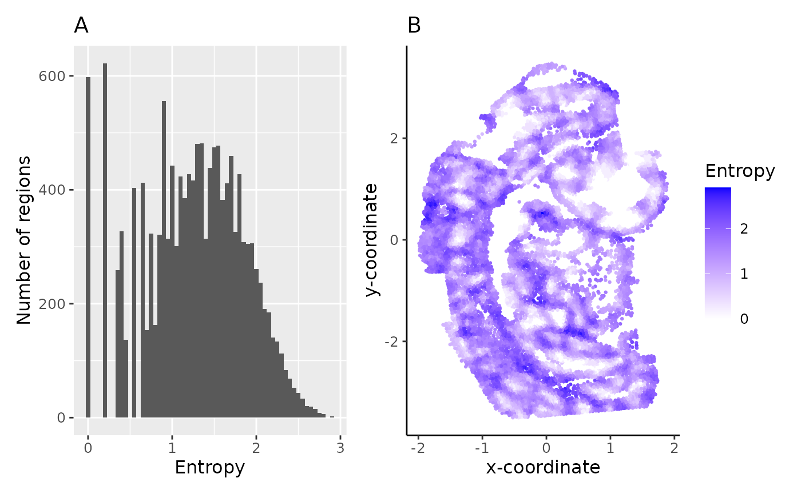

Single sample analysis
Pratibha Panwar, Boyi Guo, Haowen Zhou, Stephanie Hicks, Shila Ghazanfar
2024-09-04
Source:vignettes/01_seqFISH_mouseEmbryo.Rmd
01_seqFISH_mouseEmbryo.RmdSeqFISH mouse embryo data analysis
# load required packages
library(clustSIGNAL)
library(distances)
library(cluster)
library(aricode)
library(dplyr)
library(ggplot2)
library(patchwork)
data(mEmbryo2)
spe = SpatialExperiment(assays = list(logcounts = me_expr),
colData = me_data, spatialCoordsNames = c("X", "Y"))
spe
#> class: SpatialExperiment
#> dim: 351 14185
#> metadata(0):
#> assays(1): logcounts
#> rownames(351): Abcc4 Acp5 ... Zfp57 Zic3
#> rowData names(0):
#> colnames(14185): embryo2_Pos29_cell10_z2 embryo2_Pos29_cell10_z5 ...
#> embryo2_Pos50_cell99_z2 embryo2_Pos50_cell99_z5
#> colData names(7): uniqueID pos ... nsCluster nsSubcluster
#> reducedDimNames(0):
#> mainExpName: NULL
#> altExpNames(0):
#> spatialCoords names(2) : X Y
#> imgData names(0):
names(colData(spe))
#> [1] "uniqueID" "pos"
#> [3] "celltype_mapped_refined" "sample_id"
#> [5] "entropy" "nsCluster"
#> [7] "nsSubcluster"To run clustSIGNAL, we need the column names of sample and cell labels in the colData dataframe of the spatial experiment object. Here, the cell labels are in the column ‘uniqueID’ and sample labels are in ‘embryo’ column.
Running clustSIGNAL
set.seed(100)
samples = "sample_id"
cells = "uniqueID"
res_emb = clustSIGNAL(spe, samples, cells, outputs = "a")
#> [1] "Calculating PCA to use as reduced dimension input."
#> [1] "clustSIGNAL run started. 2024-09-04 06:35:33.580553"
#> [1] "Initial nonspatial clustering performed. Clusters = 16 2024-09-04 06:35:39.294941"
#> [1] "Nonspatial subclustering performed. Subclusters = 80 2024-09-04 06:35:44.260327"
#> [1] "Regions defined. 2024-09-04 06:35:49.944232"
#> [1] "Region domainness calculated. 2024-09-04 06:36:00.507565"
#> [1] "Smoothing performed. NN = 30 Kernel = G Spread = 0.05 2024-09-04 06:38:15.315252"
#> [1] "Nonspatial clustering performed on smoothed data. Clusters = 24 2024-09-04 06:38:20.8452"
#> [1] "clustSIGNAL run completed. 2024-09-04 06:38:20.847023"The output variable is a list that can contain dataframe of cluster names, matrix of NN neighbours of each cell, final spe object, or a combination of these, depending on the choice of ‘outputs’ selected.
names(res_emb)
#> [1] "clusters" "neighbours" "spe_final"
head(res_emb$clusters, n = 3)
#> Cells Clusters
#> 1 embryo2_Pos29_cell10_z2 19
#> 2 embryo2_Pos29_cell10_z5 19
#> 3 embryo2_Pos29_cell100_z2 19
spe = res_emb$spe_final
spe
#> class: SpatialExperiment
#> dim: 351 14185
#> metadata(0):
#> assays(2): logcounts smoothed
#> rownames(351): Abcc4 Acp5 ... Zfp57 Zic3
#> rowData names(0):
#> colnames(14185): embryo2_Pos29_cell10_z2 embryo2_Pos29_cell10_z5 ...
#> embryo2_Pos50_cell99_z2 embryo2_Pos50_cell99_z5
#> colData names(8): uniqueID pos ... nsSubcluster reCluster
#> reducedDimNames(2): PCA PCA.smooth
#> mainExpName: NULL
#> altExpNames(0):
#> spatialCoords names(2) : X Y
#> imgData names(1): sample_idCalculating clustering metrics
# calculating silhouette width
clusts <- as.numeric(as.character(spe$reCluster))
cXg_mat <- t(as.matrix(logcounts(spe)))
distMat <- distances(cXg_mat)
silCluster <- as.matrix(silhouette(clusts, distMat))
spe$rcSil <- silCluster[, 3]
# for datasets with annotated cell type information, we can also calculate
# metrics like adjusted rand index (ARI) and normalised mutual information (NMI)
as.data.frame(colData(spe)) %>%
summarise(ARI = aricode::ARI(celltype_mapped_refined, reCluster),
NMI = aricode::NMI(celltype_mapped_refined, reCluster),
ASW = mean(rcSil),
min_Entropy = min(entropy),
max_Entropy = max(entropy),
mean_Entropy = mean(entropy))
#> ARI NMI ASW min_Entropy max_Entropy mean_Entropy
#> 1 0.3302441 0.58197 0.03808628 0 2.906357 1.246809Visualising clustSIGNAL outputs
colors = c("#635547", "#8EC792", "#9e6762", "#FACB12", "#3F84AA", "#0F4A9C",
"#ff891c", "#EF5A9D", "#C594BF", "#DFCDE4", "#139992", "#65A83E",
"#8DB5CE", "#005579", "#C9EBFB", "#B51D8D", "#532C8A", "#8870ad",
"#cc7818", "#FBBE92", "#EF4E22", "#f9decf", "#c9a997", "#C72228",
"#f79083", "#F397C0", "#DABE99", "#c19f70", "#354E23", "#C3C388",
"#647a4f", "#CDE088", "#f7f79e", "#F6BFCB", "#7F6874", "#989898",
"#1A1A1A", "#FFFFFF", "#e6e6e6", "#77441B", "#F90026", "#A10037",
"#DA5921", "#E1C239", "#9DD84A")Entropy spread and distribution
# Histogram of entropy spread
hst_ent <- as.data.frame(colData(spe)) %>%
ggplot(aes(entropy)) +
geom_histogram(binwidth = 0.05) +
ggtitle("A") +
labs(x = "Entropy", y = "Number of regions") +
theme_grey() +
theme(text = element_text(size = 12))
# Spatial plot showing sample entropy distribution
spt_ent <- as.data.frame(colData(spe)) %>%
ggplot(aes(x = spatialCoords(spe)[, 1],
y = -spatialCoords(spe)[, 2])) +
geom_point(size = 0.5,
aes(colour = entropy)) +
scale_colour_gradient2("Entropy", low = "grey", high = "blue") +
scale_size_continuous(range = c(0, max(spe$entropy))) +
ggtitle("B") +
labs(x = "x-coordinate", y = "y-coordinate") +
theme_classic() +
theme(text = element_text(size = 12))
hst_ent + spt_ent
The spread (A) and spatial distribution (B) of region entropy measures can be very useful in assessing the tissue composition of samples - low entropy regions are more homogeneous with domain-like structure, whereas high entropy regions are heterogeneous with more uniform distribution of cells.
clustSIGNAL clusters visualisation
df_ent = as.data.frame(colData(spe))
# spatial plot
spt_clust <- df_ent %>%
ggplot(aes(x = spatialCoords(spe)[, 1],
y = -spatialCoords(spe)[, 2])) +
geom_point(size = 0.5, aes(colour = reCluster)) +
scale_color_manual(values = colors) +
ggtitle("A") +
labs(x = "x-coordinate", y = "y-coordinate") +
guides(color = guide_legend(title = "Clusters",
override.aes = list(size = 3))) +
theme_classic() +
theme(text = element_text(size = 12))
# calculating median entropy of each cluster
celltype_ent = df_ent %>%
group_by(as.character(reCluster)) %>%
summarise(meanEntropy = median(entropy))
# reordering clusters by their median entropy
# low to high median entropy
cellOrder = celltype_ent$meanEntropy
names(cellOrder) = celltype_ent$`as.character(reCluster)`
cellOrder = sort(cellOrder)
df_ent$reCluster = factor(df_ent$reCluster, levels = names(cellOrder))
# box plot of cluster entropy
colors_ent = colors[as.numeric(names(cellOrder))]
box_clust <- df_ent %>%
ggplot(aes(x = reCluster, y = entropy, fill = reCluster)) +
geom_boxplot() +
scale_fill_manual(values = colors_ent) +
ggtitle("B") +
labs(x = "clustSIGNAL clusters", y = "Entropy") +
theme_classic() +
theme(legend.position = "none",
text = element_text(size = 12),
axis.text.x = element_text(angle = 90, vjust = 0.5, hjust = 1))
spt_clust + box_clust + patchwork::plot_layout(guides = "collect", widths = c(1, 2))
The spatial location (A) and entropy distribution (B) of the clusters provide spatial context of the cluster cells and their neighbourhoods, as well as the compositions of the neighbouhoods.
Session Information
sessionInfo()
#> R version 4.4.1 (2024-06-14)
#> Platform: x86_64-pc-linux-gnu
#> Running under: Ubuntu 22.04.4 LTS
#>
#> Matrix products: default
#> BLAS: /usr/lib/x86_64-linux-gnu/openblas-pthread/libblas.so.3
#> LAPACK: /usr/lib/x86_64-linux-gnu/openblas-pthread/libopenblasp-r0.3.20.so; LAPACK version 3.10.0
#>
#> locale:
#> [1] LC_CTYPE=C.UTF-8 LC_NUMERIC=C LC_TIME=C.UTF-8
#> [4] LC_COLLATE=C.UTF-8 LC_MONETARY=C.UTF-8 LC_MESSAGES=C.UTF-8
#> [7] LC_PAPER=C.UTF-8 LC_NAME=C LC_ADDRESS=C
#> [10] LC_TELEPHONE=C LC_MEASUREMENT=C.UTF-8 LC_IDENTIFICATION=C
#>
#> time zone: UTC
#> tzcode source: system (glibc)
#>
#> attached base packages:
#> [1] parallel stats4 stats graphics grDevices utils datasets
#> [8] methods base
#>
#> other attached packages:
#> [1] patchwork_1.2.0 ggplot2_3.5.1
#> [3] dplyr_1.1.4 aricode_1.0.3
#> [5] cluster_2.1.6 distances_0.1.11
#> [7] clustSIGNAL_0.1.0 doParallel_1.0.17
#> [9] iterators_1.0.14 foreach_1.5.2
#> [11] SpatialExperiment_1.14.0 SingleCellExperiment_1.26.0
#> [13] SummarizedExperiment_1.34.0 Biobase_2.64.0
#> [15] GenomicRanges_1.56.1 GenomeInfoDb_1.40.1
#> [17] IRanges_2.38.1 S4Vectors_0.42.1
#> [19] BiocGenerics_0.50.0 MatrixGenerics_1.16.0
#> [21] matrixStats_1.3.0 BiocStyle_2.32.1
#>
#> loaded via a namespace (and not attached):
#> [1] gridExtra_2.3 rlang_1.1.4
#> [3] magrittr_2.0.3 scater_1.32.1
#> [5] compiler_4.4.1 DelayedMatrixStats_1.26.0
#> [7] systemfonts_1.1.0 vctrs_0.6.5
#> [9] pkgconfig_2.0.3 crayon_1.5.3
#> [11] fastmap_1.2.0 magick_2.8.4
#> [13] XVector_0.44.0 labeling_0.4.3
#> [15] scuttle_1.14.0 utf8_1.2.4
#> [17] rmarkdown_2.28 UCSC.utils_1.0.0
#> [19] ggbeeswarm_0.7.2 ragg_1.3.2
#> [21] xfun_0.47 bluster_1.14.0
#> [23] zlibbioc_1.50.0 cachem_1.1.0
#> [25] beachmat_2.20.0 jsonlite_1.8.8
#> [27] highr_0.11 DelayedArray_0.30.1
#> [29] BiocParallel_1.38.0 irlba_2.3.5.1
#> [31] R6_2.5.1 bslib_0.8.0
#> [33] jquerylib_0.1.4 Rcpp_1.0.13
#> [35] bookdown_0.40 knitr_1.48
#> [37] igraph_2.0.3 Matrix_1.7-0
#> [39] tidyselect_1.2.1 abind_1.4-5
#> [41] yaml_2.3.10 viridis_0.6.5
#> [43] codetools_0.2-20 lattice_0.22-6
#> [45] tibble_3.2.1 withr_3.0.1
#> [47] evaluate_0.24.0 desc_1.4.3
#> [49] pillar_1.9.0 BiocManager_1.30.25
#> [51] generics_0.1.3 sparseMatrixStats_1.16.0
#> [53] munsell_0.5.1 scales_1.3.0
#> [55] glue_1.7.0 tools_4.4.1
#> [57] BiocNeighbors_1.22.0 ScaledMatrix_1.12.0
#> [59] fs_1.6.4 grid_4.4.1
#> [61] colorspace_2.1-1 GenomeInfoDbData_1.2.12
#> [63] beeswarm_0.4.0 BiocSingular_1.20.0
#> [65] vipor_0.4.7 cli_3.6.3
#> [67] rsvd_1.0.5 textshaping_0.4.0
#> [69] fansi_1.0.6 S4Arrays_1.4.1
#> [71] viridisLite_0.4.2 gtable_0.3.5
#> [73] sass_0.4.9 digest_0.6.37
#> [75] SparseArray_1.4.8 ggrepel_0.9.5
#> [77] farver_2.1.2 rjson_0.2.22
#> [79] htmltools_0.5.8.1 pkgdown_2.1.0
#> [81] lifecycle_1.0.4 httr_1.4.7